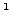

]Combine User's Manual
[Combine User's Manual][Comm. in Asteroseismology
Vol. number, publication date (will be inserted in the production process)]Comm. in Asteroseismology
Vol. number, publication date (will be inserted in the production process)P. Reegen
P. Reegen
Institut für Astronomie, Türkenschanzstrasse 17, 1180 Vienna, Austria
reegen@astro.univie.ac.at